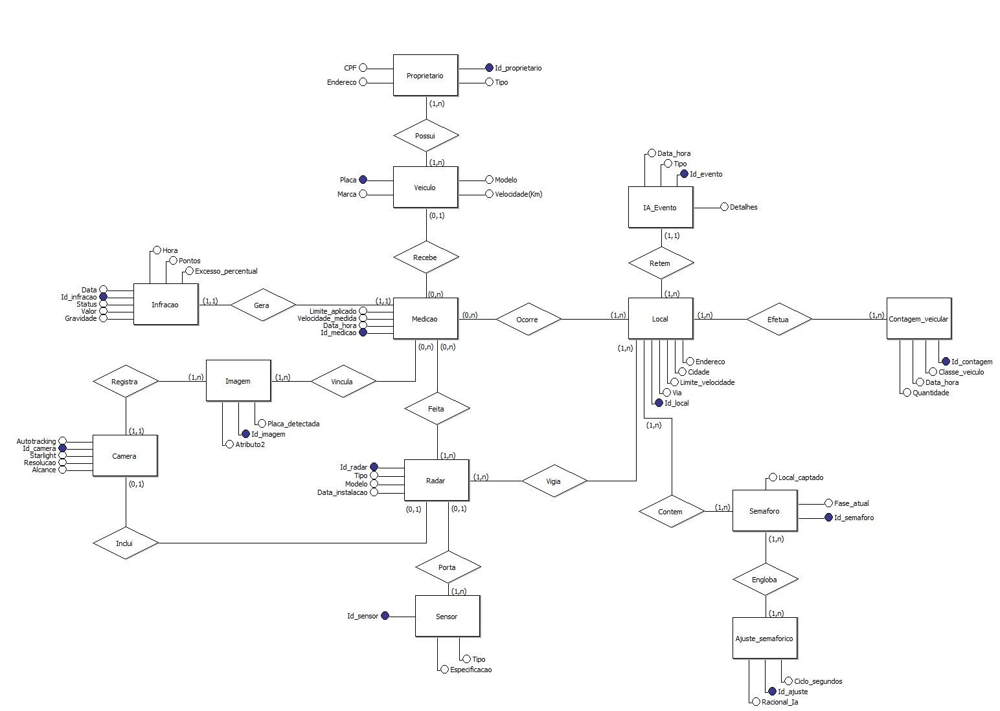

Diagrama de Entidade-Relacionamento (DER)
O Diagrama de Entidade-Relacionamento (DER) representa a estrutura de dados do sistema Sentry, mostrando as entidades principais, seus atributos e os relacionamentos entre elas.
As entidades incluem: Veículos, Infrações, Semáforos, Câmeras, entre outras, com seus respectivos relacionamentos que definem como os dados são organizados e conectados no sistema.
Diagrama de Contexto

F1. DADOS DO PROPRIETÁRIO CPF/CNH/TIPO
F2. DADOS DO PROPRIETÁRIO OK
F3. DADOS DO VEÍCULO PLACA/VELOCIDADE
F4. DADOS DO VEÍCULO OK
F5. DADOS LEIS/REGRAS DE TRÂNSITO
F6. DADOS MEDIÇÃO
F7. DADOS RELATÓRIO DADOS DA MEDIÇÃO
F8. DADOS DA MEDIÇÃO OK
F9. DADOS DA INFRAÇÃO
F10. DADOS RELATÓRIO DA INFRAÇÃO
F11. DADOS SEMÁFORO FASE/ESTADO ATUAL
F12. DADOS AJUSTE SEMAFÓRICO
O Diagrama de Contexto ilustra como o sistema Sentry interage com entidades externas, definindo os limites do sistema e os fluxos de informação com o ambiente externo.
Mostra as interfaces com sistemas de trânsito, autoridades municipais, motoristas e outros sistemas relacionados, proporcionando uma visão macro das interações do Sentry.